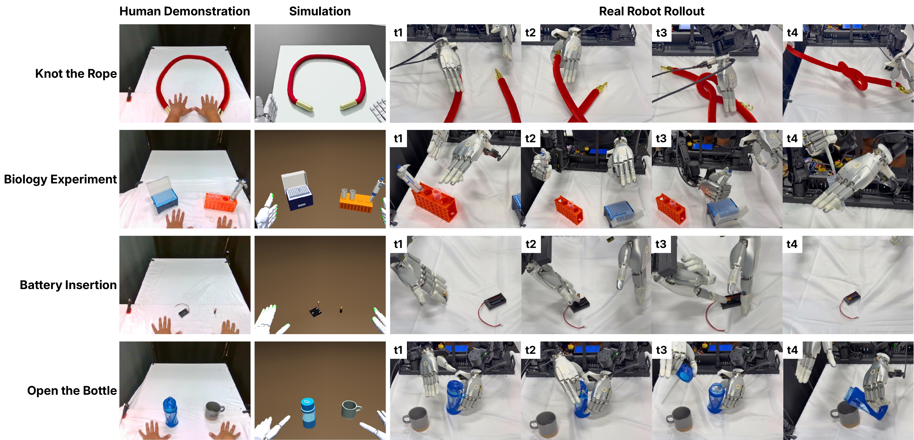
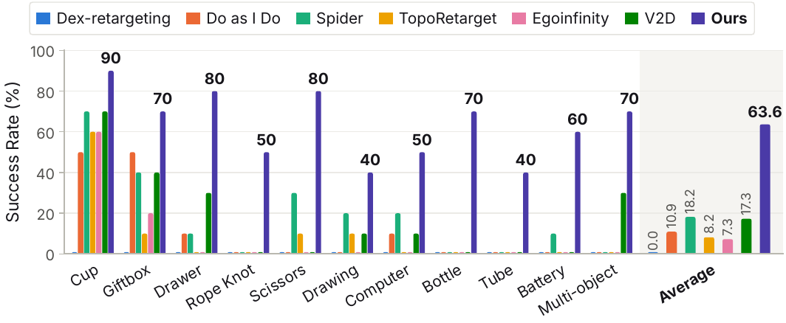
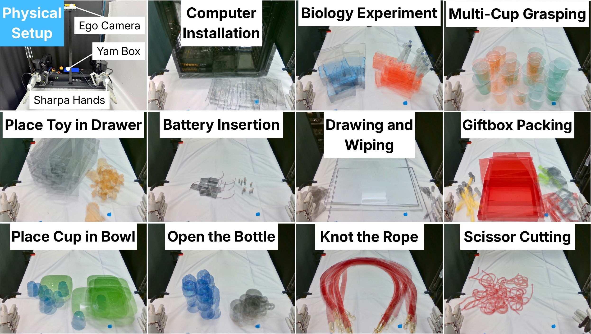
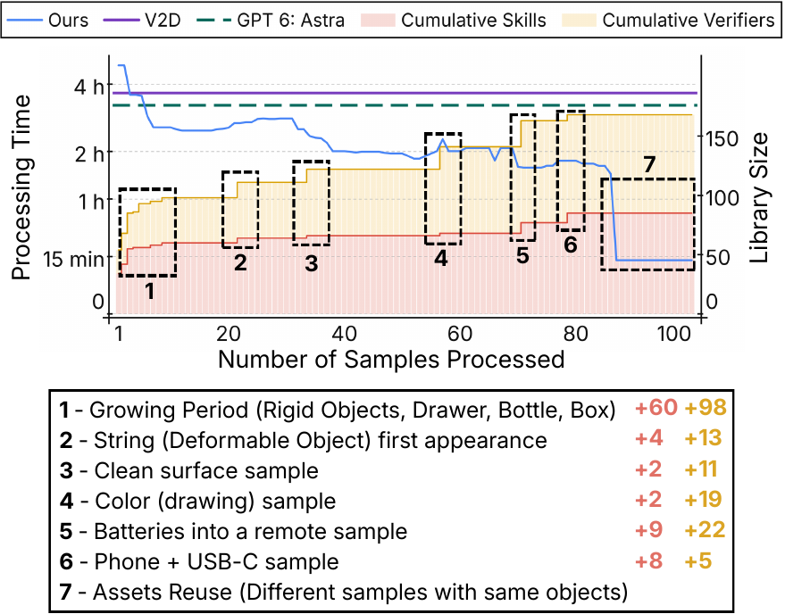

DexAgent: An Agentic Human2Sim2Robot Framework for Dexterous Manipulation with Self-Evolving Tool Library
1Stanford University 2Columbia University


Human videos offer a scalable source of demonstrations for dexterous robot manipulation. However, existing human-to-simulation-to-robot (Human2Sim2Robot) pipelines rely on predefined procedures that struggle to accommodate diverse object properties and interactions, particularly those involving articulated and deformable objects. We introduce DexAgent, an agentic Human2Sim2Robot framework that converts a single egocentric human video and a task prompt into physically grounded robot trajectories for policy training. It operates through four stages: semantic understanding of human videos, property-based simulation reconstruction, robot trajectory optimization, and robot data generation. At each stage, DexAgent adapts its approach to the task and object properties by selecting suitable skills from its tool library or developing new ones when needed. Property-specific verifiers assess stage outcomes for physical validity and task-specific requirements and provide feedback for refinement, preventing error propagation through the workflow. In the final stage, DexAgent varies object and robot states in simulation to generate diverse robot trajectories from a single human video, then retextures the rendered observations to facilitate sim-to-real transfer. Newly developed skills and verifiers are retained in its tool library, making it self-evolving to accumulate reusable capabilities and reducing processing time as it encounters more human videos. Across eleven real-world tasks, policies trained with DexAgent-generated data achieve a 3.5× higher success rate than competing baselines.





Per-task rollout videos.
Knot the Rope
Biology Experiment
Battery Insertion
Open the Bottle
Computer Installation
Scissor Cutting